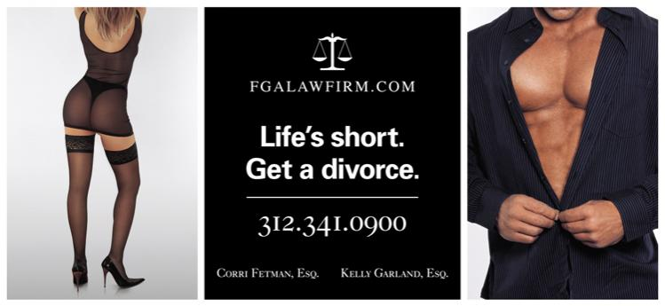

Presentations
Print Ads
Not Guilty
Better Call Pete
Better Call Pete (Episode 2)
Better Call Pete (Finale)
Case dismissed!
Life’s Short

Corri Courts Controversy
Look at This Ad, but Don’t Get Any Ideas
Video Ads
Tell Us How You Really Feel
Divorce EZ … or Not
Divorce Lawyer’s Commercial Goes Viral
Divorce EZ
Steven D. Miller
The Texas Hammer
What’s in a Name?
Thanks Dan!
Hire Me, I Think Like a Criminal
ABA Journal
Machete
Want to See More?
Lawyer Advertising on YouTube